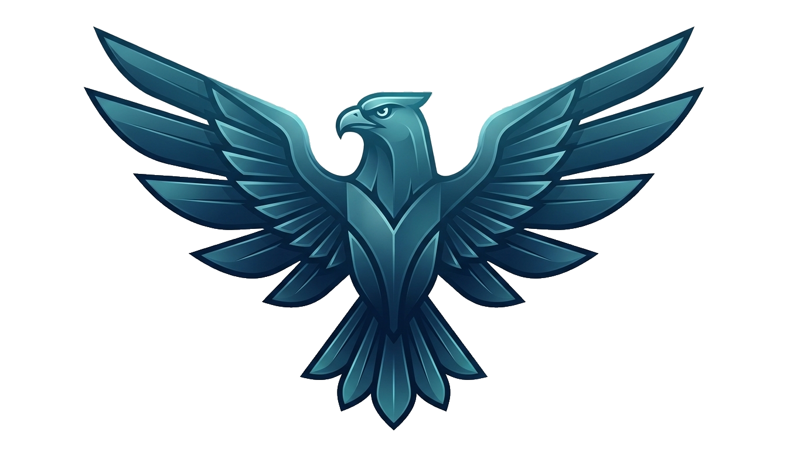
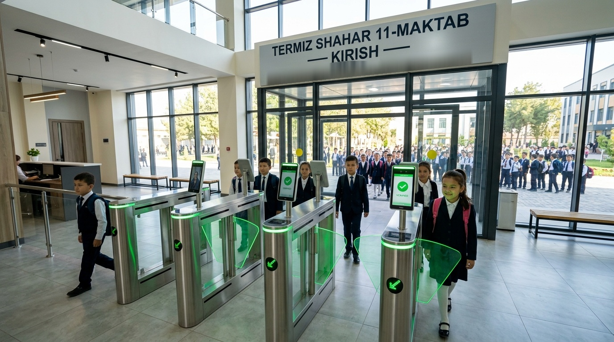
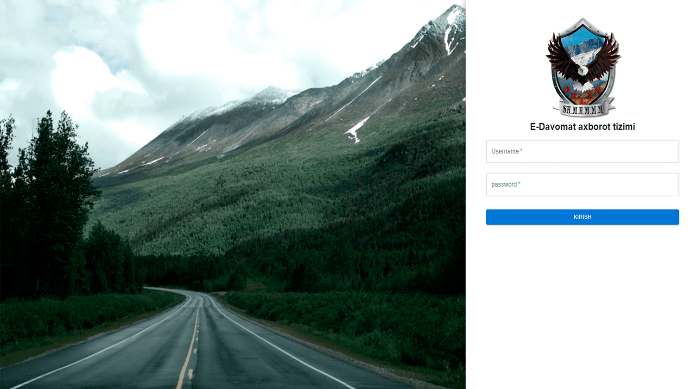
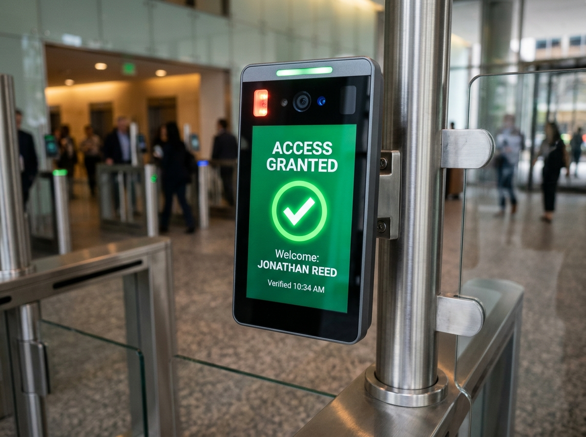
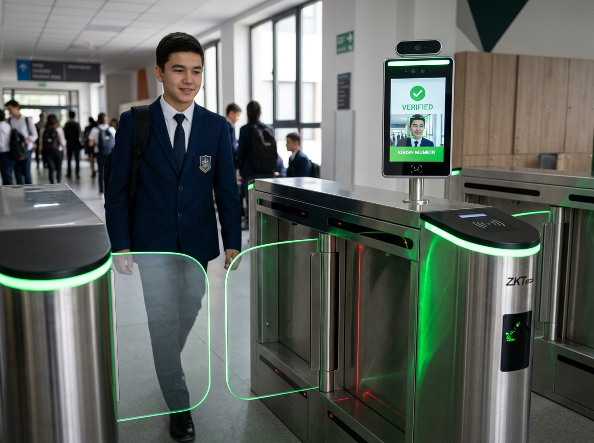

Sun'iy intellekt va yuzni tanish (Face Recognition) texnologiyalariga asoslangan aqlli turniketlar, xususiy shifrlangan VPN kanallari hamda ota-onalar uchun real vaqtdagi Telegram va SMS xabarnomasi.

Har bir harakat millisoniyalarda tahlil qilinadi, shifrlanadi va monitoring markaziga yetkaziladi.
2.5 metr masofadan infraqizil va RGB kameralar yuzni avtomatik fokuslaydi.
128 ta yuz nuqtasi 0.18s da tekshirilib, fotosurat bilan aldash to'xtatiladi.
ST-100 zanglamaydigan po'lat turniket qanotlari 0.3s da silliq ochiladi.
O'tish vaqti soniyasigacha AES-256 orqali serverga jo'natiladi.
Telegram boti orqali farzandining kirish vaqti haqida darhol xabar boradi.
Kundalik va e-maktab tizimiga o'quvchi avtomatik tarzda "keldi" deb kiritiladi.
08:30 dan so'ng kelgan yoki darsga kelmaganlar oniy tahlil qilinadi.
Elektr o'chganida zaxira LiFePO4 batareyalari 8 soat uzluksiz ta'minlaydi.
Bazada mavjud bo'lmagan begona shaxslar kiritilmaydi va signal beriladi.
Maktab davomati va xavfsizligi bo'yicha ma'lumotlar profilaktika bo'limiga boradi.
Hokimlik, MMTV bo'limlari, maktab ma'muriyati va profilaktika xizmati uchun 4 ta boshqaruv ekrani.
Maktab direktori va vakolatli xodimlar uchun shaxsiy xavfsiz avtorizatsiya. Begona ulanishlar avtomatik bloklanadi.

Yagona respublika monitoring markazi: har bir viloyat bo'yicha oniy davomat va xavfsizlik telemetriyasi.
Termiz shahri va 14 ta tumandagi barcha 948 ta maktab Milliy Gvardiya xulosasi bilan to'liq jihozlangan.
Maktab o'quvchilari navbatsiz va tez kirib-chiqishi uchun moslashtirilgan qurilmalar.
1.5mm po'lat korpus, tezkor qanotli servo-dvigatel, bolalar xavfsizligi datchiklari va Anti-panika avto-ochilishi.

8" IPS ekran, infraqizil va RGB kameralar orqali yuzni har qanday yorug'likda 0.18s da aniqlash.

Elektr o'chganida ham turniketlar va server to'xtovsiz ishlayveradi. 2000 tsiklli zaxira batareya.